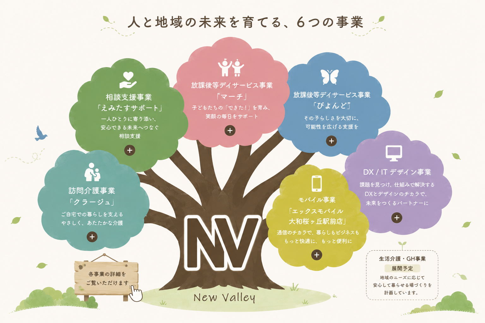

各事業の葉にカーソルを合わせると詳細が表示されます →
✕ 閉じる
NEWS
お知らせ
ABOUT US
自らの幸福のたゆまぬ追求
訪問介護・放課後等デイサービス・相談支援を軸に、障害のある方とご家族の毎日に寄り添う福祉の会社です。
利用者さんの小さな一歩を一緒に喜び、地域で安心して暮らせる仕組みをスタッフと共につくっています。
2026年、創業11年目を迎えさらなる包括的な地域支援を目指して拡大を続けています。
BUSINESS
事業紹介

COMPANY
わたしたちについて
2016年創業、2025年に10周年を迎えました。神奈川・大和と東京・町田を拠点に、障害福祉サービスを展開し続けています。
私たちについて →NEWS & TOPICS
お知らせ
あなたの「やってみたい」を、
ニューバリーで。
まずはカジュアルにお話ししましょう。LINEでもお気軽に！